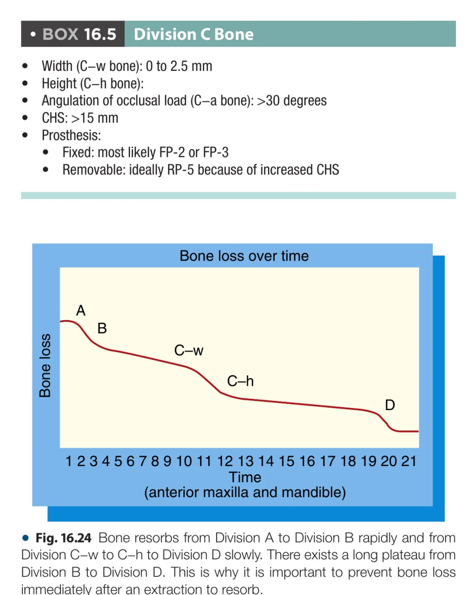
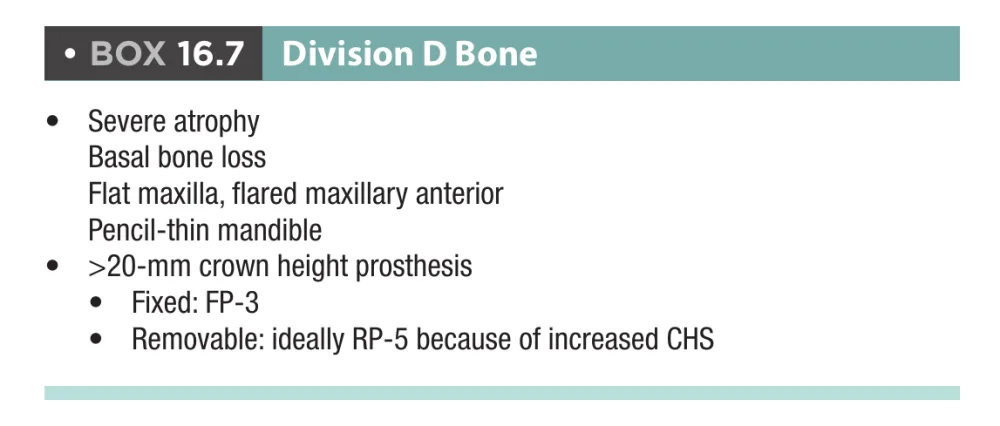

نسخه استخراجشده؛ ترجمه یا تأیید علمی انجام نشده است. وضعیت: captured
دیویژن C را «استخوان ناکافی» (Compromised Bone) مینامند، و آن را بر پایهی اینکه کدام بُعد ناکافی است به زیرگروهها تقسیم میکنند.
ابعاد دیویژن C:
• C-w (کمبود عرض): عرض ۰ تا ۲٫۵ میلیمتر
• C-h (کمبود ارتفاع)
• C-a (کمبود زاویه): زاویهی بار اکلوزالی بیش از ۳۰ درجه
• CHS بیش از ۱۵ میلیمتر
• پروتز: ثابت — بهاحتمال زیاد FP-2 یا FP-3، متحرک — بهطور ایدهآل RP-5 بهدلیل CHS افزایشیافته
سه حرف کوچک را نگه دار: w برای عرض، h برای ارتفاع، a برای زاویه. این نامگذاری به تو میگوید کدام بُعد شکست خورده — و همین، درمان را تعیین میکند.
و به یک تغییر مهم دقت کن: در دیویژن A و B، شرط CHS کمتر از ۱۵ میلیمتر بود. در دیویژن C این شرط وارونه میشود: CHS بیش از ۱۵ میلیمتر.
و این یک مرز صرفاً عددی نیست. از ماژول ۱ میدانی که ارتفاع تاج یک کانتیلور عمودی است و هر افزایش آن، ممان نیرو را بزرگتر میکند. عبور از ۱۵ میلیمتر یعنی ورود به قلمرویی که بیومکانیک دیگر بخشنده نیست.
و به همین دلیل، توصیهی پروتزی هم عوض میشود: در دیویژن C، RP-5 «بهطور ایدهآل» توصیه میشود — نه به این دلیل که بهتر است، بلکه چون CHS زیاد، پروتز ثابت را پرخطر میکند و پروتز متحرک بخشی از بار را به بافت نرم میسپارد.
و گزینههای درمان دیویژن C:
• استئوپلاستی — برای C-w
• ایمپلنتهای ریشهای — برای C-h
• روشهای افزایش استخوان پیش از جایگذاری ایمپلنت
• ایمپلنت سابپریوستئال — برای C-h
• ایمپلنت دیسکی — در کنار ایمپلنتهای ریشهای، در C-h
و اکنون یک نکتهی زمانی که از درس پیش ادامه مییابد و باید آن را کنار هم بگذاری:
تحلیل از A به B سریع است و پس از آن «یک فلات طولانی از دیویژن B تا دیویژن D وجود دارد.»
پس منحنی تحلیل استخوان خطی نیست. افت تند در ابتدا، سپس یک فلات طولانی. و نتیجهی عملی صریح است: «به همین دلیل مهم است که تحلیل استخوان بلافاصله پس از کشیدن دندان پیشگیری شود.»
یعنی پنجرهی مداخلهی مؤثر، کوتاه و در همان ابتداست. پس از آن، بیمار سالها در وضعیتی میماند که درمانش پیچیدهتر و پرهزینهتر است.

دیویژن D را «استخوان معیوب» (Deficient Bone) مینامند؛ دشوارترین وضعیت در دندانپزشکی ایمپلنت.
ویژگیها: آتروفی شدید، تحلیل استخوان بازال، ماگزیلای تخت با قدام فلرشده، مندیبل به باریکی مداد، پروتز با ارتفاع تاج بیش از ۲۰ میلیمتر.
و یک باور قدیمی که باید تصحیح شود:
«زمانی تصور میشد که تنها زائدهی آلوئولار پس از از دست رفتن دندان تحلیل میرود و استخوان بازال باقی میماند. با این حال، تحلیل استخوان ممکن است فراتر از ریشههای پیشین دندانها ادامه یابد و حتی استخوان روی عصب تحتانی مندیبل یا خار بینی ماگزیلا را در بر بگیرد.»
و پیامدهای آناتومیک که هر کدام یک مشکل بالینی میسازند:
• «تحلیل استخوان بازال در نهایت به یک ماگزیلای کاملاً تخت میانجامد.»
• «در مندیبل، توبرکلهای ژنیال فوقانی به فوقانیترین بخش ریج تبدیل میشوند.»
• «عضلهی مِنتالیس بخش زیادی از اتصالش را از دست میدهد.»
• «عضلهی بوکسیناتور ممکن است به عضلهی مایلوهایوئید نزدیک شود و یک آپونوروز بالای تنهی مندیبل تشکیل دهد.»
• «قوس مندیبل با فورامنهای منتال و بخشهایی از کانال مندیبولار دهیسنت ظاهر میشود.»
و پیامد عصبی که باید بشناسی: «بنابراین کم پیش نمیآید که این بیماران نقص حسیـعصبی لب پایین را گزارش کنند، بهویژه هنگام جویدن.»
«بهویژه هنگام جویدن» — این جزئیات تشخیصی است. عصب دیگر درون استخوان محافظت نمیشود، پس فشار پروتز هنگام عملکرد آن را تحریک میکند.
و CHS: «CHS بیش از ۲۰ میلیمتر است، که یک تشدیدکنندهی چشمگیر نیرو است و بهندرت میتوان آن را بهاندازهی کافی کاهش داد تا موفقیت بلندمدت حاصل شود.»
و نتیجهی پروتزی: «نتیجهی پروتزی برای دیویژن D بدون افزایش استخوان، ضعیفترین پیامد درمانی در میان همهی دیویژنهای استخوان است.» و: «ترمیمهای ثابت تقریباً همیشه منع مصرف دارند، چون CHS بسیار چشمگیر است.»
و اکنون نکتهای که باید با دقت بخوانی — پروتز متحرک در دیویژن D:
«یک ترمیم RP-5 پیشنهاد نمیشود، چون تحلیل استخوان در ناحیهی بافتنرمپشتیبان اوردنچر ادامه خواهد یافت، و معمولاً شلف باکال (ناحیهی اصلی تحمل استرس) وجود ندارد.»
این با دیویژن C فرق دارد، جایی که با CHS زیاد «بهطور ایدهآل RP-5» توصیه میشود.
چرا؟
RP-5 بنا به تعریف، پشتیبانی اولیه را از بافت نرم میگیرد. ولی در دیویژن D شلف باکال، که ناحیهی اصلی تحمل استرس مندیبل است، از بین رفته. یعنی RP-5 در دیویژن D بر تکیهگاهی استوار است که وجود ندارد — و بارگذاری بافت نرم، تحلیل باقیمانده را هم تسریع میکند.
پس توصیهی درست: «اوردنچرهای کاملاً ایمپلنتپشتیبان هرجا ممکن است اندیکاسیون دارند تا عوارض بافت نرم و عصبی کاهش یابد» — یعنی RP-4، نه RP-5.
و شرطش هم این است: «ولی به پشتیبانی ایمپلنت قدامی و خلفی نیاز دارند، که تقریباً همیشه افزایش استخوان پیش از جایگذاری ایمپلنت را میطلبد.»
و راهکار نهایی: «گرافتهای استخوان اتوژن از کرست ایلیاک برای بهبود دیویژن D بهشدت پیش از هر تلاش درمانی ایمپلنت توصیه میشوند. پس از جایگیری گرافتهای اتوژن و ترمیم ۵ ماه یا بیشتر، دیویژن استخوان معمولاً C-h یا دیویژن A است و ایمپلنتهای اندوستئال میتوانند جایگذاری شوند.»
و یک قاعدهی صریح که ارزش حفظ کردن دارد:
«گرافتهای استخوان اتوژن باید همیشه برای جایگذاری ایمپلنت اندیکاسیون داشته باشند، نه هرگز برای افزایش پشتیبانی یک دنچر.»
و دلیلش تکاندهنده است: «اگر پروتزهای بافتنرمبر روی گرافتهای اتوژن ساخته شوند، مطالعات نشان دادهاند که ۹۰ درصد استخوان گرافتشده ظرف پنج سال تحلیل میرود.»
نود درصد. یعنی گرافت بدون ایمپلنت، تقریباً بهطور کامل هدر میرود.
و هشدار پایانی، که یک هشدار اخلاقی است نه فنی:
«اگر شکست ایمپلنت رخ دهد، بیمار ممکن است به یک ناتوان دندانی تبدیل شود — ناتوان از استفاده از هر پروتزی و در وضعیتی بدتر از پیش از درمان.»
و: «اگرچه درمانگر و بیمار اغلب این وضعیت را نومیدکنندهترین میدانند، این بیماران معمولاً عوارض مزمن ممکن را درک نمیکنند.»
پس در دیویژن D، مهمترین مهارت تو ممکن است تشخیص این باشد که چه زمانی نباید درمان کنی — یا دستکم، چه زمانی باید پیش از هر ایمپلنتی، گرافت کنی.
